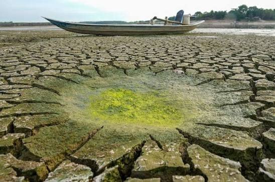
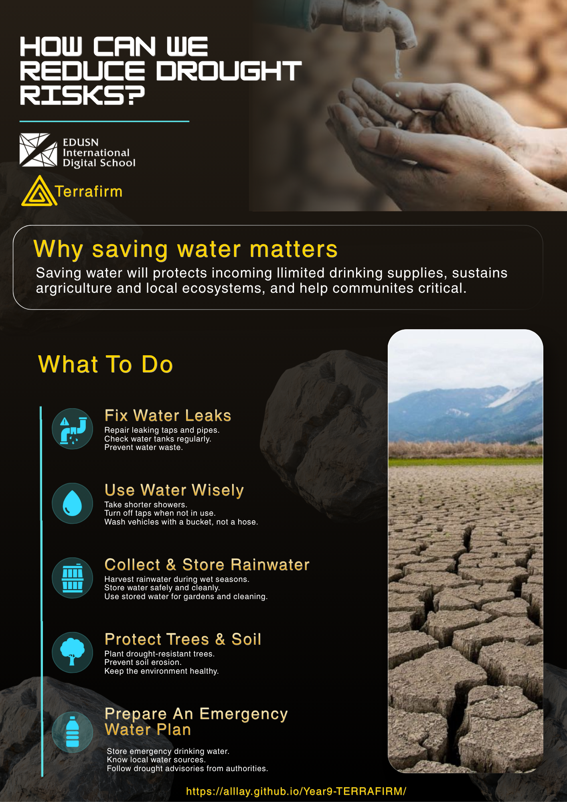

Disaster Awareness • Natural Hazards
DROUGHTS
When water sources dry up, communities feel the impact over months and years. Understand the causes and effects of droughts, and learn how to protect against water shortages.
.jpg)

Understanding Droughts
What Is A Drought?
Drought is defined as a long period of arid weather where there is no rain resulting to no water. Unlike any other emergency situation, drought happens gradually and lasts for months and years. It affects not only humans, but also animals, plants, and even the environment.
There is a challenge for people to get enough water for their own use and food sources.
Why It Happens
Main Causes Of Droughts
Understanding weather variations and environmental changes helps us manage water supplies.
.jpg)
Lack of Rainfall
In case where there is rain for a prolonged period of time in an area, water tables will start going down. The reservoirs within the area will also start running. This reduces the availability of water for humans, animals, and even plants.
.jpg)
High Temperatures
Warm temperatures increase evaporation in rivers and lakes. Warm temperatures will also make the topsoil dry very fast. Water in the ground evaporates very fast and disappears.
.jpg)
Deforestation & Land Use
Deforestation, and lack of vegetation change the climate conditions. Trees and other plants help maintain moist in the soil. Lack of these plants increases rate at which the soil dries up.
The Consequences
Effects Of Droughts
Droughts have far-reaching impacts on human life, health, and food security.
Water Shortages
Communities struggle to access enough clean water for drinking, sanitation, and daily needs.
Crop Failure
Farmers lose crops because vegetation cannot survive without sufficient moisture in the soil.
Food Insecurity
Reduced agricultural output leads to scarcity and higher prices for basic food items.
Environmental Hazards
Dry conditions significantly increase the risk of severe wildfires and habitat destruction.
Be Prepared
How Can We Reduce Drought Risks?
Conservation strategies and proper water management can safeguard communities.

Stay Safe
Drought Safety Guide
Know what practices to follow before, during, and after dry spell emergencies.
Before A Drought
- Store clean emergency drinking water supplies.
- Learn and obey local community water restrictions.
- Check and repair household plumbing leaks.
- Install water-saving fixtures and drip irrigation.
During A Drought
- Use water strictly for essential health and hydration needs.
- Avoid non-essential outdoor watering or car washing.
- Stay updated through local public advisory announcements.
- Reuse greywater where safe and permissible.
After A Drought
- Continue practicing responsible water conservation habits.
- Verify water safety with authorities before unrestricted use.
- Support community projects to restore local ecosystems.
- Maintain rainwater catchment tanks for future resilience.
Awareness Today. Safety Tomorrow.
We cannot prevent droughts from developing, but through smart water management and conservation, we can minimize their impact.
Explore More Disasters